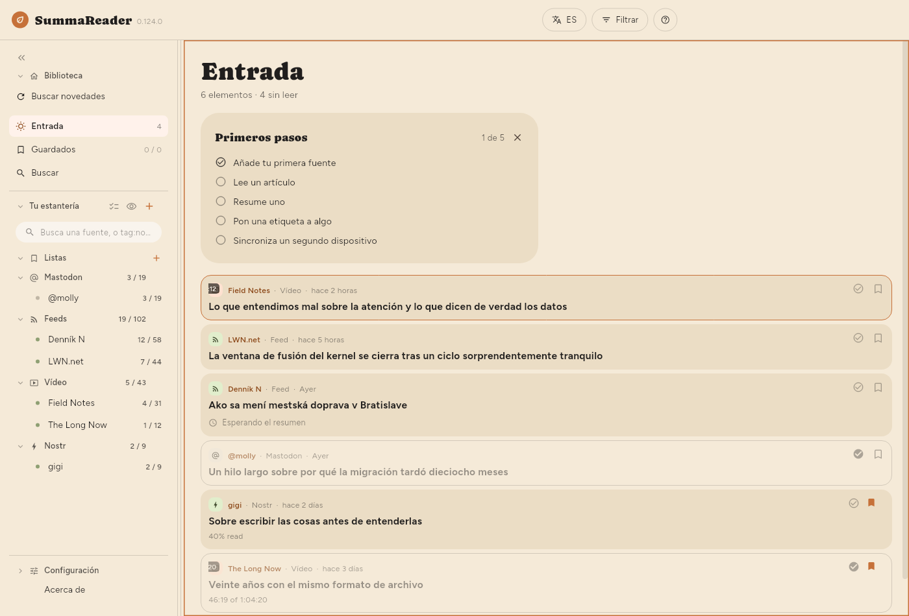
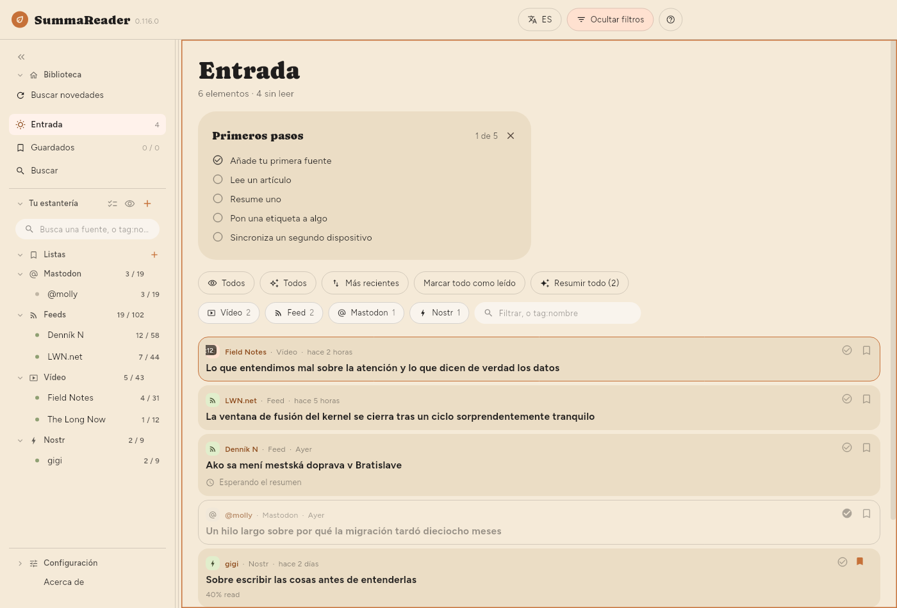
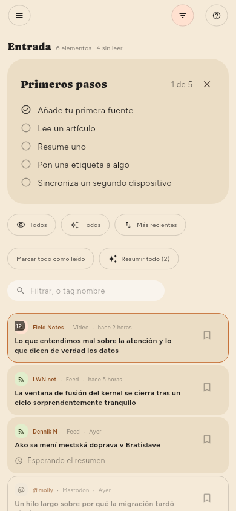

← Cómo empezar · Contenido · Leer →
La ventana

La barra superior
| Control | Qué hace |
|---|---|
| EN | El idioma de la interfaz |
| Filtrar | Muestra y oculta el panel de filtros |
| ? | Ayuda sobre lo que hay en pantalla |
Filtrar aparece mientras la lista está en pantalla, también cuando lees un artículo junto a ella. El botón Filtrar se rellena y pasa a decir Filtrado siempre que algo reduce la lista, así que una lista que muestra solo una parte de sí misma siempre dice por qué. En un teléfono, ☰ abre la estantería y Filtrar es el botón junto a ?.
La estantería
De arriba abajo a la izquierda: Biblioteca con Buscar novedades, Entrada, Guardados y Buscar; luego Tu estantería con tus Listas y tus feeds agrupados por tipo; y al pie, Configuración. Cada feed muestra sin leer / total; cada lista muestra lo que contiene. En un teléfono la estantería es un cajón que se abre con ☰.
- Buscar novedades consulta ahora todas las fuentes.
- El cuadro de arriba reduce la estantería y nada más: parte del nombre de un feed, o
tag:y parte de una etiqueta. Basta con una parte, así quetag:gamencuentragamingyretro-gamingpor igual; y una palabra corta abarca mucho, ya quetag:aitambién encuentra un feed etiquetadoretail, y!tag:ailo oculta. El cuadro de texto del panel de filtros pide la etiqueta entera. - Haz clic en un feed para ver solo ese feed.
- Haz clic en una lista para ver lo que contiene; consulta Guardar cosas.
- Seleccionar varias (las marcas junto a Tu estantería), o una pulsación larga en una fila, muestra un engranaje en cada feed. El engranaje abre el panel propio de ese feed; consulta Gestionar las fuentes.
- El ojo junto a + oculta todos los feeds que no tienen nada pendiente.
- « contrae la estantería a una tira de iconos.
bhace lo mismo.
El panel de filtros
Pulsa Filtrar. Aquí está todo lo que decide qué muestra la lista, y está cerrado por defecto para que lo primero bajo el encabezado sea el primer artículo.


| Control | Qué hace |
|---|---|
| Sin leer / Leídos / Todos | Qué elementos se muestran |
| Todos / Resumidos / Sin resumir | Si existe un resumen |
| Más recientes | El orden: pulsa para pasar por los seis |
| Marcar todo como leído | Marca todo lo que abarca el filtro |
| Resumir todo | Resume todo lo que abarca el filtro |
| Chips de tipo | Vídeos, feeds, publicaciones: haz clic para reducir |
| El cuadro de texto | Busca una palabra en el título, la fuente o el resumen, o tag:nombre |
El orden va rotando: Más recientes → Más antiguos → Título A–Z → Título Z–A → Fuente A–Z → Fuente Z–A, y vuelta a empezar.
El filtro de leídos, el de resumidos y el orden se recuerdan entre un arranque y otro. El feed elegido no: eso es navegación, y abrir una biblioteca reducida a un feed que elegiste la semana pasada parece una aplicación vacía.
Los contadores bajo «Entrada»
Mostrando 18 de 5878 · 52 sin leer · 812 por resumir
- Mostrando solo aparece cuando un filtro reduce la lista, y cuenta las filas que hay realmente en pantalla.
- por resumir es el mismo número que el del botón Resumir, y es lo que haría al pulsarlo.
Cómo se ve la lista
| Ajuste | Dónde |
|---|---|
| Tamaño del texto | Configuración › Básico › Apariencia › Texto › Tamaño del texto |
| Densidad de la lista | Configuración › Básico › Apariencia › Lista › Densidad de la lista |
| Resumen en la lista | Configuración › Básico › Apariencia › Lista › Resumen en la lista |
| Miniaturas | Configuración › Básico › Apariencia › Lista › Miniaturas |
| Interlineado, Ancho de la columna | Configuración › Básico › Apariencia › Artículo |
| Dónde se coloca el artículo | Configuración › Básico › Apariencia › Disposición |
| Agrupar por fuente | Configuración › Básico › Apariencia › Lista › Agrupar por fuente |
Densidad de la lista decide cuánto de cada elemento dibuja la lista:
| Resumen | Título | Imagen | |
|---|---|---|---|
| Cómoda | se muestra | ocupa las líneas que necesite | grande |
| Compacta (por defecto) | — | dos líneas | pequeña |
| Densa | — | una línea | ninguna |
Con Cómoda elegida, Resumen en la lista (Configuración › Básico › Apariencia › Lista › Resumen en la lista) fija cuánto de cada resumen muestra una fila: 2 líneas, 4 líneas o el Resumen completo (por defecto). Un artículo que aún no tiene resumen muestra en el mismo lugar, más tenue y con el mismo límite, su comienzo: la descripción propia de la fuente o, si no la hay, las primeras palabras del texto del artículo. La fila solo aparece con Cómoda, porque Compacta y Densa no muestran resumen.
Miniaturas: Imagen muestra la imagen propia de cada artículo en lugar de un icono de tipo. Es la única de las tres opciones que cuesta algo: las imágenes se descargan de pocas en pocas para las filas en pantalla, así que una lista larga de pendientes se va completando poco a poco y no de golpe. Densa no hace caso de este ajuste: una imagen tiene tres líneas de alto, y eso no es denso.